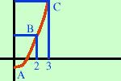

|
Determinare i punti di massimo e minimo per la seguente funzione nell'intervallo a fianco segnato y = x2 - 1 2 l'unica difficolta' di questi esercizi nasce dall frettolosita' dell'alunno che letta la parola massimi e minimi si precipita a risolvere l'esercizio stesso senza considerare che invece il massimo ed il minimo va considerato in un intervallo dato. Molto spesso il valore che si trova annullando la derivata e' al di fuori dell'intervallo dato, quindi il massimo ed il minimo sono i valori della funzione nei due estremi dell'intervallo Trovo la derivata prima e la pongo uguale a zero y' = 2x 2x = 0 x = 0 Trovo il valore della y corrispondente sostituendo 0 al posto di x nell'equazione di partenza y(0) = 02 - 1 = -1 Il punto estremante e' A(0 , -1) siccome io devo considerare i valori della funzione all'interno dell'intervallo 2 trovo il valore delle y corrispondenti sostituendo prima 2 poi 3 al posto di x nell'equazione di partenza y(2) = 22 - 1 = 3 y(3) = 32 - 1 = 8 i punti sono  B(2 , 3) C(3 , 8) Quindi B e' il punto di minimo e C il punto di Massimo nell'intervallo considerato |